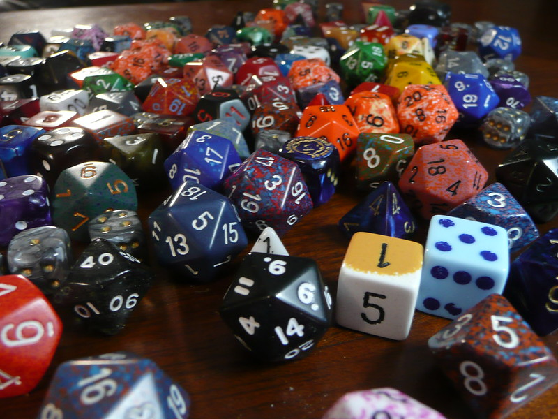

Diceatron Rollers
Click one of the tabs to select the dice set and rules you need.

Dice are a wonderful tool used in RPGs to determine the outcome of a wide number of things in game, but you cannot always have enough or a seperation physically between players can make it difficult to use them. This site, hopes to offer an alternative to rolling needs with pages customized to different rulesets.